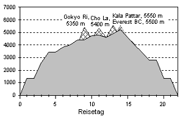
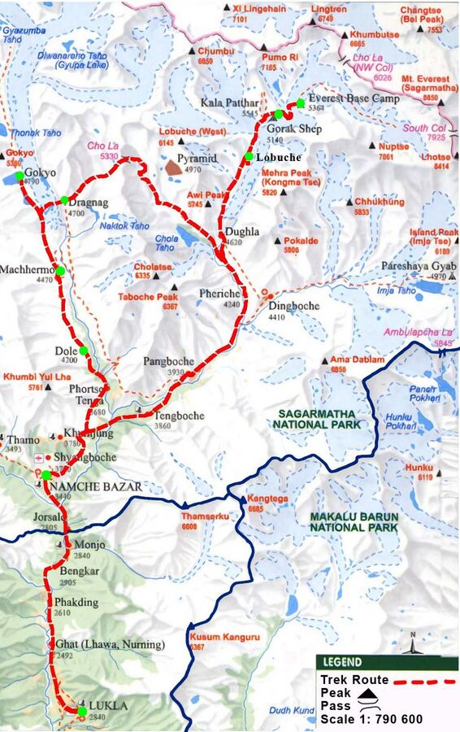

Hangi zirvelere çıkacağız? Etaplarımız neler? İşte bir liste:

- Kathmandu (1.355 m)
- Lukla (2.700 m)
- Pakding (2.600)
- Namche Bazaar (3.450 m)
- Thame Manastırı (3.800 m)
- Khumjung (3.800 m)
- Dole (4.000 m)
- Machermo (4.400 m)
- Gokyo (4.750 m)
- Gokyo Ri (5.350 m)
- Na (4.400 m)
- Phortse (3.800 m)
- Periche (4.300 m)
- Lobuche (4.900 m)
- KALA PATTAR (5.550 m)
- Gorak Shep (5.130 m)
- EVEREST BASE CAMP (5.370 m)
- Lobuche (4.900 m)
- Pangpoche (3.980 m)
- Namche Bazaar (3.400 m)
- Lukla (2.800 m)
- Kathmandu
